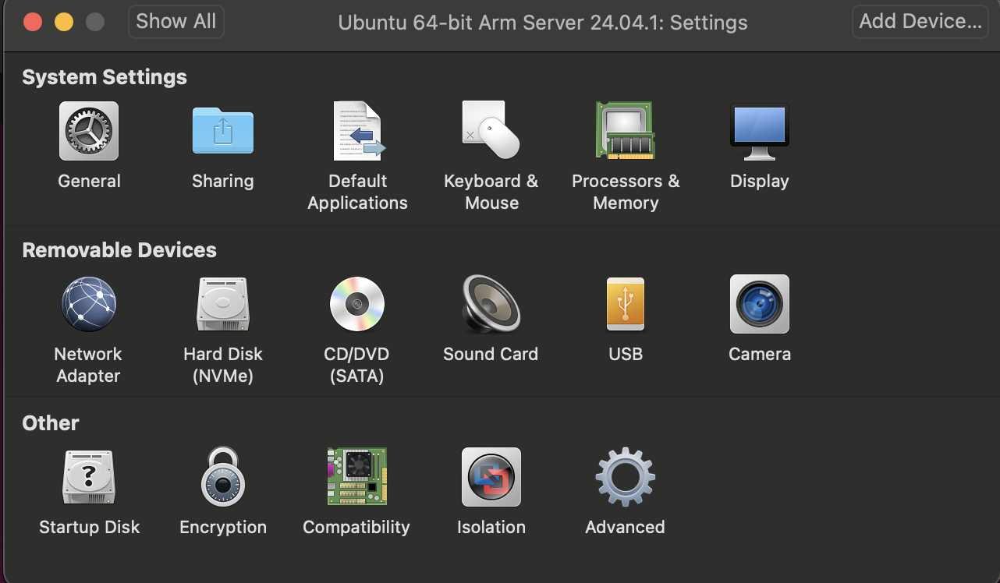

InstallationUbuntu
I use VMware Fusion to install Ubuntu on Mac with Apple M3 pro chip. THe following are the detailed process of installation:
1)Download of VMware Fusion and Ubuntu
We go to the official website of VMware Fusion and download VMware Fusion application. And go to tsinghua mirror to download ubuntu iso. There are one thing to mention that since we use M3 chips, we should download live-server of ubuntu. There are no user interface in live-server, but if we download and install desktop version of ubuntu, we can have. However, I tried to install desktop version of ubuntu but VMware Fusion can not power it for it requires x86 system.. So there we download live-server version of ubuntu and we will install user interface later.
2)Installation of Ubuntu
After the download of VMware Fusion and Ubuntu liver-server.iso , we open the Vmware Fusion and we will see: We just need to drag the downloaded ubuntu live-server.iso to the top of the VMware Fusion windowand we will see:
Then click “finish”/“continue” until appear a window. Congratulations! you have successfully installed ubuntu. It will cost some time to install.
3)Installation of user interface and share resources with desktop
After we successfully installed Ubuntu, it will be a terminal liked window and waiting for you command. Run sudo apt-get upgrade and sudo apt install ubuntu-desktop sequencely. It will take a lot of time for the second command for it will download 2. G files. You amy encounter some strange problem or stop during the installation. One stop I encounter is when it are installing firefox something, it says: “waiting for automatic snapd restart” and I wait for about half an hour and there are nothing happens. I stop the command and run it(“sudo apt install ubuntu-desktop” ) again and find that this stop is fixed but when it are installing thunderbird, it says the same thing. I wait about 15 minutes and it go further. So you can wait until it success or stop it and tun it again. And after that restart your Ubuntu and you can see the user interface: and after we log in we will see: There are still one thing need to do before connecting VM with local machine. You should install desktop versioned VMware tools. Since we download live-server version iso files, the VMware tools in our Ubuntu system are live-server versioned now. Run sudo apt-get update , sudo apt-get autoremove open-ym-tools and sudo apt-get install open-vm-tools-desktop sequencely and reboot virtual machine will be ok.
And now it is time to connect the Virtual machine with our local machine.
Firstly go to VM setting and click sharing: There the shared folder are in our local machine, create a new folder named “share” in your local machine at anywhere you want to put you sharing files. And choose the newly created folder: Then, make a directory “share” at /mnt/hgfs: run cd /mnt/hgfs and mkdir share After that, run vmware-hgfsclient if there exist the share, it means that we have successed. and the folder will look like this: You can just put files in the “share” folder in whether local machine or virtual machine and the another will see the files in there relative locaitons. However, there are still one problem that I encountered when I share files: when I reboot the virtual machine the hgfs folder will be empty and the share folder will disappear!  We can handle this by: go to VM setting and click sharing, and click “Enable Shared Folders” twice and share folder will appear.
We can handle this by: go to VM setting and click sharing, and click “Enable Shared Folders” twice and share folder will appear.
Tiny problems:
- The times are not same to the Beijing time
- I can not copy and paste sentence at the begin, but it works now. I have no idea about the reason, maybe it is the result of Mac OS? No matter what the reason is, I can copy and paste not.
- Takes too long time to start: We just need to change the time limit: cd /etc/systemd/system/network-online.target.wants/ and run sudo vim systemd-networkd-wait-online.service and add TimeoutStartSec=2sec
Reference:
[1] 奥莉小芙Olive 在MacOS上安装VMware Fusion虚拟机和Ubuntu 20.04.3 https://zhuanlan.zhihu.com/p/429127093
[2] 跳舞的Tango Ubuntu Server 20.04 安装桌面(图形界面) 以及 远程桌面 https://blog.csdn.net/badboy_1990/article/details/121412618
[3] Mico工控 优化liunx/Ubuntu开机卡在等待网络连接好长时间设置a start job is running for wait network…… https://blog.csdn.net/weixin_38420901/article/details/129879185